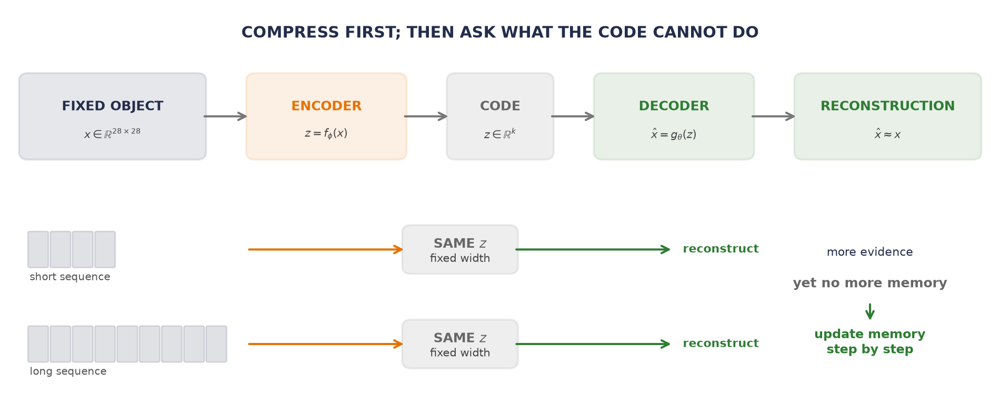
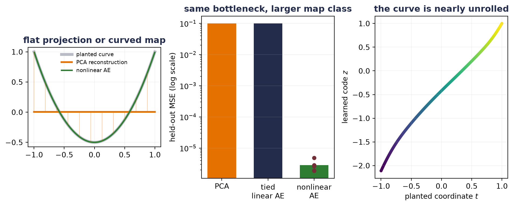
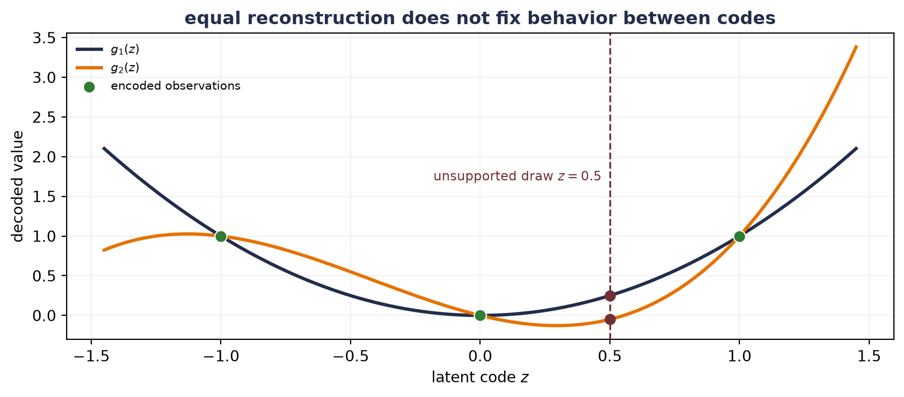
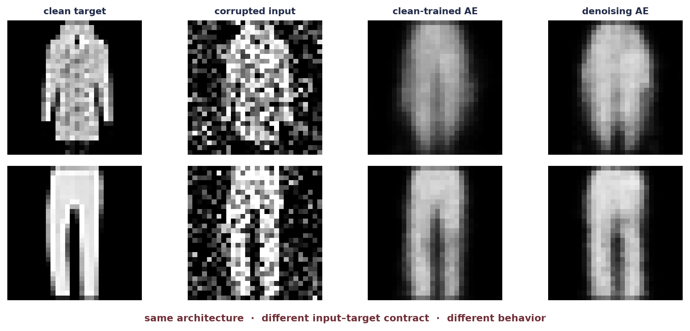

11 Interlude: Autoencoders: Making PCA Learnable
Part II gave neural networks a spatial prior: local kernels share one rule across an image. The next part must handle objects whose length is not known in advance. Before we add a loop, we start with a fixed-size object. Could an encoder compress an object into a fixed-size code and a decoder recover what mattered?
That compression-and-reconstruction machine is an autoencoder. We will first learn its contract, then discover that principal component analysis (PCA) was already its closed-form linear case. Gradient descent makes the same map learnable; nonlinearity lets it bend around curved data. Even when it succeeds, a one-shot encoder is not yet a variable-length process.
11.1 Compress, then reconstruct
Set random sampling aside for a moment and ask a simpler question. If an input has \(d\) coordinates, can a network preserve its important structure using only \(k<d\) numbers?
An autoencoder contains two maps. For one input \(\vect{x}\in\mathbb{R}^{d}\), the encoder produces a code \(\vect{z}\in\mathbb{R}^{k}\) and the decoder reconstructs the input:
\[ \vect{z}=f_\phi(\vect{x}), \qquad \widehat{\vect{x}}=g_\theta(\vect{z}). \]
The narrow code is the bottleneck. For \(n\) examples stored as rows of \(\matr{X}\in\mathbb{R}^{n\times d}\), a squared reconstruction objective is
\[ \mathcal{L}_{\mathrm{AE}}(\phi,\theta) =\frac{1}{nd}\sum_{i=1}^{n} \norm{\vect{x}_i-g_\theta(f_\phi(\vect{x}_i))}_2^2. \]
The target is available for free (the input supplies it), but the objective is still specific: preserve enough information to reconstruct the input. This is commonly called self-supervised because each input supplies its own target. It also belongs to unsupervised representation learning. Mean squared error is one choice, suitable when independent, equal-variance Gaussian error is a reasonable model. It is not the universal autoencoder loss.
The hourglass shape creates pressure. If \(k\) is small and the maps have controlled capacity, useful regularities may be cheaper to preserve than individual accidents. But pressure is not proof.
WarningA bottleneck is pressure, not a certificate
A real-valued low-dimensional code can still carry surprising information; and a high-capacity network can memorize a finite training set. Check held-out reconstruction, latent behavior, and the decoder between observed codes. “The bottleneck learned meaning” is an empirical claim, not a consequence of \(k<d\).
11.2 Make PCA learnable
Appendix A computes PCA from a centered singular value decomposition. What if we replace the SVD with trainable weights and a reconstruction loss? The answer begins with the precise statement PCA is a linear autoencoder. Let the training rows be centered, so their mean is zero. Let \(\matr{V}_k\in\mathbb{R}^{d\times k}\) contain \(k\) orthonormal principal directions:
\[ \matr{V}_k^\top\matr{V}_k=\matr{I}_k. \]
PCA encodes and decodes by
\[ \vect{z}=\matr{V}_k^\top\vect{x}, \qquad \widehat{\vect{x}} =\matr{V}_k\vect{z} =\matr{V}_k\matr{V}_k^\top\vect{x}. \]
The product \(\matr{P}_k=\matr{V}_k\matr{V}_k^\top\in\mathbb{R}^{d\times d}\) is the orthogonal projector onto the principal \(k\)-dimensional subspace. Among all linear reconstruction maps of rank at most \(k\), this projector minimizes squared reconstruction error. Now replace the SVD with gradient descent. A tied linear autoencoder uses one trainable matrix \(\matr{W}\in\mathbb{R}^{d\times k}\) in both directions:
\[ \vect{z}=\matr{W}^\top\vect{x}, \qquad \widehat{\vect{x}}=\matr{W}\matr{W}^\top\vect{x}. \]
At a global optimum under the centered, squared-loss, undercomplete conditions, it can recover the same principal reconstruction subspace. That is the accurate content of “PCA is a linear autoencoder”: not a claim that every optimizer run succeeds or that every learned weight equals a particular PCA basis.
NoteSame subspace, not the same coordinates
For any orthogonal \(\matr{Q}\in\mathbb{R}^{k\times k}\),
\[ (\matr{V}_k\matr{Q})(\matr{V}_k\matr{Q})^\top =\matr{V}_k\matr{V}_k^\top. \]
The latent axes may rotate or reflect; the reconstruction projector stays fixed. For an untied encoder and decoder, any invertible latent change of basis can cancel between the two maps. Compare reconstruction products, projectors, or principal angles, not raw latent coordinates.
NoteFramework previews: SVD and \(\tanh\)
The experiment uses torch.linalg.svd only to compute PCA’s closed-form reference after the projection has been derived above; Appendix A opens that decomposition and its shape/centering contract. It also uses \(\tanh\), the smooth pointwise map \(\tanh(u)\in(-1,1)\), as the nonlinear activation inside the curved autoencoder. Chapter 3 already supplied the activation-layer idea. Here \(\tanh\) is simply a nonlinear map; its bounded range and derivative will matter only when repeated state updates make them a design constraint.
Watch the mechanism: same subspace, different coordinates
If the latent coordinates change, must the reconstruction move?
Look inside the same two-dimensional reconstruction plane while its basis turns. This is a schematic view of the orthogonal-basis identity in this section's note, “Same subspace, not the same coordinates.”
\( \class{ss-encoder}{\featurepart{\vect{z}'}=\matr{Q}^{\top}\featurepart{\vect{z}}} \) \( \class{ss-decoder}{\predictionpart{\widehat{\vect{x}}}=(\matr{V}_k\matr{Q})\featurepart{\vect{z}'}} \) \( \class{ss-projector}{\matr{V}_k\class{ss-cancel}{\underbrace{\matr{Q}\matr{Q}^\top}_{\matr{I}}}\featurepart{\vect{z}}=\matr{V}_k\featurepart{\vect{z}}} \)
Compare reconstruction projectors, not the individual coordinates or basis columns.
The diagram is readable without playback. Opening this panel loads the optional controls.
This is a change of coordinates inside one fixed subspace, not a training trajectory.
Scope and caveats
The point and turn specify drawing geometry, not measured values. Both maps change together: the encoder gives \(\matr{Q}^{\top}\vect{z}\), and the decoder uses \(\matr{V}_k\matr{Q}\). Changing only one map need not preserve the reconstruction. The later curve experiment has a one-dimensional code; its orthogonal basis change is a sign flip, not this two-axis rotation.
Check yourself. Let Q flip the sign of the second basis vector instead of turning the basis. Does the reconstruction move?
No. A reflection is orthogonal too: the second coordinate changes sign, its basis vector changes sign, and their product is unchanged. The reconstruction depends on the subspace, not on how its axes are labelled.
Transcript and keyboard help
- A green point marks the reconstruction inside a fixed two-dimensional subspace. Predict whether turning its coordinate axes must move this point.
- The two solid arrows are the columns of an orthonormal basis. Their directions name coordinates, not a different reconstruction plane.
- Perpendicular drops read the point's coordinates on the current basis axes. The axes then begin to turn within the same plane.
- The new basis is V times Q. Dashed axes retain the original reference. The new encoder coordinates are Q transpose times the old coordinates.
- The turn finishes. The coordinate projections differ, but the green reconstruction point has not moved.
- Decode by adding the new coordinate-weighted basis vectors head to tail. The two components still end at the same green point.
- The paired basis changes cancel: Q times Q transpose is the identity. The reconstruction projector is unchanged.
- Compare projectors rather than raw basis columns or latent coordinates. This schematic coordinate change is not optimizer motion or the later one-dimensional experiment.
Silent; paused initially; 1.5× playback. Focus the animation pane: Space or K plays/pauses, arrows seek between beats, Home/End jump, Escape pauses. The scrubber and speed menu also work by keyboard. Reduced-motion mode holds each beat's state instead of moving between them.
11.3 What if the map could bend?
PCA gives the best flat rank-\(k\) reconstruction. What if the encoder and decoder were learnable nonlinear maps that could bend with the data?
Take a controlled curve with a known one-dimensional coordinate. For \(t\in[-1,1]\), define
\[ \vect{x}(t) =\left(t,\;1.5\left(t^2-\frac{1}{3}\right)\right)^\top. \]
The alternating grid points form train and held-out sets. PCA and a tied linear autoencoder receive a one-dimensional bottleneck, as does a nonlinear \(2\rightarrow24\rightarrow1\rightarrow24\rightarrow2\) autoencoder. The comparison is intentionally about representational shape, not parameter efficiency. The nonlinear model has far more adjustable knobs. Before you run it, predict which map can follow the bend with one number per point, and whether PCA and the tied linear autoencoder will find the same line.
- Define the reusable helpers:
planted_curveandprincipal_projection. - Define the reusable helpers:
CurveAutoencoderandfit_curve. - Create empty lists
curve_rowsandcurve_modelsto collect each seed’s metrics and model. - Rematch PCA and linear and nonlinear autoencoders on a planted curve.
- Print per-seed MSEs, projector gap, and latent correlation, then their mean and SD.
# [1]
def planted_curve(t: Tensor) -> Tensor:
return torch.stack((t, 1.5 * (t.square() - 1.0 / 3.0)), dim=1)
def principal_projection(train_x: Tensor) -> tuple[Tensor, Tensor]:
mean = train_x.mean(dim=0)
_, _, vh = torch.linalg.svd(train_x - mean, full_matrices=False)
return mean, vh[:1].T
# [2]
class CurveAutoencoder(nn.Module):
def __init__(self) -> None:
super().__init__()
self.encoder = nn.Sequential(nn.Linear(2, 24), nn.Tanh(), nn.Linear(24, 1))
self.decoder = nn.Sequential(nn.Linear(1, 24), nn.Tanh(), nn.Linear(24, 2))
def forward(self, x: Tensor) -> tuple[Tensor, Tensor]:
z = self.encoder(x)
return self.decoder(z), z
def fit_curve(seed: int) -> tuple[float, float, float, float, float, CurveAutoencoder]:
torch.manual_seed(seed)
t_all = torch.linspace(-1.0, 1.0, 513)
train_t, test_t = t_all[::2], t_all[1::2]
train_x, test_x = planted_curve(train_t), planted_curve(test_t)
mean, basis = principal_projection(train_x)
pca_reconstruction = (test_x - mean) @ basis @ basis.T + mean
pca_mse = F.mse_loss(pca_reconstruction, test_x).item()
tied_weight = nn.Parameter(torch.randn(2, 1) * 0.2)
tied_optimizer = torch.optim.Adam([tied_weight], lr=0.03)
centered_train = train_x - mean
for _ in range(1800):
tied_reconstruction = centered_train @ tied_weight @ tied_weight.T
tied_loss = F.mse_loss(tied_reconstruction, centered_train)
tied_optimizer.zero_grad()
tied_loss.backward()
tied_optimizer.step()
tied_test = (test_x - mean) @ tied_weight @ tied_weight.T + mean
tied_mse = F.mse_loss(tied_test, test_x).item()
projector_gap = torch.linalg.norm(
tied_weight @ tied_weight.T - basis @ basis.T
).item()
model = CurveAutoencoder()
optimizer = torch.optim.Adam(model.parameters(), lr=0.012)
for step in range(4000):
reconstruction, _ = model(train_x)
loss = F.mse_loss(reconstruction, train_x)
optimizer.zero_grad()
loss.backward()
optimizer.step()
if step == 2500:
for group in optimizer.param_groups:
group["lr"] = 0.003
with torch.no_grad():
nonlinear_reconstruction, z = model(test_x)
nonlinear_mse = F.mse_loss(nonlinear_reconstruction, test_x).item()
centered_z = z[:, 0] - z[:, 0].mean()
centered_t = test_t - test_t.mean()
latent_correlation = (
centered_z @ centered_t
/ torch.sqrt((centered_z @ centered_z) * (centered_t @ centered_t))
).abs().item()
return pca_mse, tied_mse, projector_gap, nonlinear_mse, latent_correlation, model
# [3]
curve_rows = []
curve_models = []
# [4]
for curve_seed in range(6050, 6055):
*curve_metrics, curve_model = fit_curve(curve_seed)
curve_rows.append(curve_metrics)
curve_models.append(curve_model)
curve_table = torch.tensor(curve_rows)
t_plot = torch.linspace(-1.0, 1.0, 257)
x_plot = planted_curve(t_plot)
plot_mean, plot_basis = principal_projection(planted_curve(torch.linspace(-1, 1, 257)))
pca_plot = (x_plot - plot_mean) @ plot_basis @ plot_basis.T + plot_mean
with torch.no_grad():
nonlinear_plot, z_plot = curve_models[0](x_plot)
# [5]
print("seed PCA MSE tied MSE projector gap nonlinear MSE |corr(z,t)|")
for seed, row in zip(range(6050, 6055), curve_rows):
print(seed, *(f"{value:.9f}" for value in row))
print("mean", *(f"{value:.9f}" for value in curve_table.mean(dim=0).tolist()))
print("SD ", *(f"{value:.9f}" for value in curve_table.std(dim=0).tolist()))seed PCA MSE tied MSE projector gap nonlinear MSE |corr(z,t)|
6050 0.100000030 0.100000030 0.000000000 0.000001906 0.997166909
6051 0.100000030 0.100000030 0.000000000 0.000002822 0.985270616
6052 0.100000030 0.100000030 0.000000000 0.000002622 0.998887989
6053 0.100000030 0.100000030 0.000000000 0.000004865 0.989845965
6054 0.100000030 0.100000030 0.000000000 0.000001859 0.992839221
mean 0.100000030 0.100000030 0.000000000 0.000002815 0.992802140
SD 0.000000000 0.000000000 0.000000000 0.000001223 0.005512553
All five linear runs recover the principal projector at the displayed precision. The nonlinear decoder follows the curve between alternating training points, and its one-dimensional code is almost monotone in the coordinate that generated the data. This is the “PCA on steroids” picture, with one qualification: nonlinearity enlarges the reconstruction class from flat subspaces to curved maps. It does not guarantee that the chosen code is semantic, stable outside the observed region, or unique.
The same point appears in a rolled two-dimensional surface in three dimensions. The smaller curve here makes the estimand visible and leaves us a true held-out interleaving test: did the decoder learn to follow the bend between training points? The geometry changes; the claim does not.
Learning a lower-dimensional coordinate system for data concentrated near a curved set is one form of manifold learning. The phrase names the goal, not a guarantee that every bottleneck recovers a true manifold or its preferred coordinates.
Watch the mechanism: PCA's flat line against every other tilt
Rank-one PCA laid a flat line through the curve. Tilt it about the center: can any other line leave less squared residual?
Sixteen points on the planted curve, the flat line through their center, and the residual from each point to its foot on that line.
\( \residualpart{\mathcal{L}_{\mathrm{AE}}} = \frac{1}{nd}\sum_{i=1}^{n}\class{fl-norm}{\norm{\featurepart{\vect{x}_i} - \class{fl-foot}{\predictionpart{\widehat{\vect{x}}_i}}}_2^2} \)
PCA's flat line wins among lines; only a map that bends can do better.
The calculation is readable without playback. Opening this panel loads the optional controls.
Sixteen evenly spaced points stand in for the chapter's grid, and the sweep compares straight lines only, which is why the bend's residual survives every tilt.
Scope and caveats
The points are the curve at the midpoints t = −1 + (2j + 1)/16 for j = 0, …, 15: evenly spread and symmetric about zero. L uses the chapter's normalization, 1/(nd) with n = 16 and d = 2, and every residual in L is drawn. The line turns in whole degrees, the small plot records L at each degree the sweep has passed, and the value of L stays beside the flat line's right end while the line turns.
Every line pivots at the sample mean, because PCA centers the rows. The minimum sits at the flat line because the curve is symmetric, so its horizontal and vertical deviations have no cross term, and its horizontal spread, 0.332, exceeds its vertical spread, 0.196 (spread: the mean squared distance from the center along an axis). The chapter's cell measures its own held-out grid and prints its own mean squared error, which this sample does not reproduce digit for digit.
Blue marks the points, green their reconstructions on the line, and wine the residuals and L; orange is the line's direction, the one thing the tied autoencoder learns here, and ink marks the pivot. The chapter's figure draws its PCA line in its house orange too.
Check yourself. Double the bend: the same sixteen points on (t, 3(t² − 1/3)). Which line through the center leaves the least residual now, and what is its L?
The vertical line, L = 0.166. Doubling the height makes the vertical spread four times larger, from 0.196 to 0.784, which now exceeds the horizontal 0.332. A line leaves the spread across it as residual, so the best line now runs along the larger spread; the flat line would leave 0.392.
Transcript and keyboard help
- Sixteen points of the planted curve sit around their center, marked with a cross. PCA's flat line runs through the center, and each point drops a residual straight up or down to its foot on the line. Together they leave L = 0.098.
- Predict. Turn the line about the center, keeping every residual perpendicular to it. Can any direction leave less squared residual than the flat line?
- The line turns toward upright. Residuals near the bottom of the curve shorten, but those of the two arms lengthen more, and L climbs to 0.166 when the line stands upright. A small plot traces L against tilt.
- The line keeps turning. L falls again and returns to 0.098 only when the line is flat, at 180 degrees, which closes a single hump in the plot.
- At a 45-degree tilt the line leans along the right arm. Its top point nearly touches the line, but the far arm's residuals grow long: L = 0.132, more than flat.
- Back to flat. Every tilt costs residual: the plot never dips below the flat line's L, so no line leaves less than the flat one.
- What is left, 0.098, is the bend itself: no straight line can follow it.
- PCA's flat line wins among lines; only a map that bends can do better. The tilt dial turns the line to any other direction.
Silent; paused initially; 1.5× playback. Focus the animation pane: Space or K plays/pauses, arrows seek between beats, Home/End jump, Escape pauses. The scrubber and speed menu also work by keyboard. The tilt dial pauses playback and redraws the whole picture for the tilt you choose; playing or scrubbing returns to the timeline. Reduced-motion mode holds each beat's finished state instead of moving between them.
11.4 A code is not yet a distribution
The nonlinear autoencoder can reconstruct held-out points on this curve. Can we now generate by drawing an arbitrary random \(z\) and passing it through the decoder?
Nothing in the reconstruction objective tells us which distribution to draw from. Reconstruction trains the decoder on codes produced by the encoder. Between those codes (and especially outside their range), many decoder functions can fit the same targets. A small algebraic example builds two such decoders. Suppose observed codes are \(z\in\{-1,0,1\}\) and one decoder is \(g_1(z)=z^2\). A second decoder can add any multiple of a function that vanishes at all three codes:
\[ g_2(z)=z^2+0.8z(z^2-1). \]
The reconstructions agree on every observed code, yet disagree elsewhere.
Watch the mechanism: reconstruction pins the codes, not the space between them
Every decoder \( g_a(z) = z^2 + a\,z(z^2-1) \) reproduces the three observed codes. As the multiple \( a \) changes, does the reconstruction error move, and how far can the decoded value at the unsupported draw \( z = 0.5 \) travel?
One decoded curve moves: the multiple a swings it through the family, while three rings mark the observed codes and their targets.
=
\( \predictionpart{g_a(z)} = z^2 + \class{df-a}{\parameterpart{a}}\,\class{df-term}{z(z^2-1)} \)
Reconstruction pins the decoder at the codes and nowhere else.
The picture is readable without playback. Opening this panel loads the optional controls.
This family is the chapter's pencil example; a trained decoder is some other function, constrained by reconstruction only where codes were observed.
Scope and caveats
The family holds the chapter's two decoders: a = 0 is \( g_1 \) and a = 0.8 is \( g_2 \). The sweep's −0.8 mirrors the chapter's multiple.
At the three codes the term z(z² − 1) is exactly zero, so every member reproduces the targets 1, 0 and 1 with zero reconstruction error; the audit cell below prints a largest observed-code gap of 0.0. At the draw the term is −0.375, so the decoded value is 0.25 − 0.375a, and it keeps moving for as long as a does. Beyond the outer codes the band widens fastest, because the added term grows like z cubed there.
This term is one choice among many: any function that vanishes at the three codes could be added, and reconstruction would not notice. Drawing a new sample needs a distribution over codes, which reconstruction does not supply; Chapter 22 builds one.
Purple rings are the observed targets, green is the decoded curve and its value at the draw, orange is the multiple a, and wine is the error. The term, the draw line, the bracket, the ghosts of earlier multiples and the band between them are neutral ink. The chapter's own figure draws \( g_2 \) in its house orange; this panel keeps orange for the learnable multiple only.
Check yourself. Observe a fourth code, z = 0.5, with target 0.25. Which multiples a of the term still reconstruct all four codes, and is the decoder then pinned down?
Only a = 0: at z = 0.5 the term z(z² − 1) equals −0.375, so any other multiple misses the new target. The decoder is still not pinned down: z(z² − 1)(z − 0.5) vanishes at all four codes, and any multiple of it can be added.
Transcript and keyboard help
- Three observed codes, z = −1, 0 and 1, are ringed at their targets 1, 0 and 1. The decoder z² passes through all three, and at the unsupported draw z = 0.5 it decodes to 0.25.
- The term z(z² − 1) is drawn dashed; it crosses zero exactly at the three observed codes. The error at the codes is 0.
- Predict. Add any multiple a of that term to z². Does the error at the codes move? How far can the value at z = 0.5 go?
- The multiple rises from 0 to 0.8, the chapter's second decoder. The curve swings between and beyond the codes, yet every ring stays on it: the error is still 0, and z = 0.5 now decodes to −0.05.
- A dotted ghost stays at a = 0.8. The multiple swings the other way, down to a = −0.8: zero error again, and z = 0.5 decodes to 0.55.
- A second ghost stays at a = −0.8 while the curve returns to a = 0. The band between the two ghosts, shaded, holds every multiple between them: it closes at the three codes and widens between and beyond them. Every multiple fits the codes: on the draw line a bracket marks −0.05 to 0.55, and the value slides along 0.25 − 0.375a.
- Arrows extend the bracket beyond both ends: a larger multiple pushes the value at z = 0.5 further, and reconstruction sets no limit.
- Reconstruction pins the decoder at the codes and nowhere else. The dial tries another multiple.
Silent; paused initially; 1.5× playback. Focus the animation pane: Space or K plays/pauses, arrows seek between beats, Home/End jump, Escape pauses. The scrubber and speed menu also work by keyboard. The multiple dial pauses playback and redraws the whole picture for the multiple you choose; playing or scrubbing returns to the timeline. Reduced-motion mode holds each beat's finished state instead of moving between them.
- Evaluate two decoders on a latent grid and set three observed codes, their targets, and one random code.
- Show why reconstruction alone does not identify latent sampling.
# [1]
latent_grid = torch.linspace(-1.45, 1.45, 400)
decoder_one = latent_grid.square()
decoder_two = latent_grid.square() + 0.8 * latent_grid * (latent_grid.square() - 1.0)
observed_codes = torch.tensor([-1.0, 0.0, 1.0])
observed_targets = observed_codes.square()
random_code = torch.tensor(0.5)
# [2]
training_gap = (
observed_codes.square()
- (observed_codes.square() + 0.8 * observed_codes * (observed_codes.square() - 1))
).abs().max()
print(f"largest decoder gap at observed codes: {training_gap.item():.1f}")
print(f"g1(0.5): {random_code.square().item():.2f}")
g2_random = random_code.square() + 0.8 * random_code * (random_code.square() - 1)
print(
"g2(0.5):",
f"{g2_random.item():.2f}",
)largest decoder gap at observed codes: 0.0
g1(0.5): 0.25
g2(0.5): -0.05
WarningReconstruction does not specify a sampler
A deterministic autoencoder may still be used inside a generative system, and we can fit a separate distribution to its codes. The narrower statement is the important one: ordinary reconstruction training supplies no built-in latent prior and no principled rule for arbitrary random draws. A code is not yet a probability distribution.
One useful intermediate move is same architecture, different training. A denoising autoencoder corrupts an input to \(\widetilde{\vect{x}}\) and asks the network to recover the clean \(\vect{x}\):
\[ \mathcal{L}_{\mathrm{DAE}} =\E_{\vect{x}\sim p_{\mathrm{data}},\, \widetilde{\vect{x}}\sim q(\widetilde{\vect{x}}\mid\vect{x})} \left[ \norm{\vect{x}-g_\theta(f_\phi(\widetilde{\vect{x}}))}_2^2 \right]. \]
Clean \(\rightarrow\) clean learns reconstruction. Under squared loss, noisy \(\rightarrow\) clean trains the output toward the conditional mean of clean inputs compatible with the corrupted observation: same architecture, different training. Different-domain input \(\rightarrow\) target learns translation. Changing the input–target contract changes what the code must preserve.
11.5 Let the autoencoder see locally
A fully connected autoencoder flattens the image and has no built-in preference for nearby pixels. A convolutional autoencoder has one. Its encoder uses learned local filters and stride to reduce spatial resolution; its decoder expands the code back into an image.
Here is the shape at each stage. The example is small enough to train on a CPU:
| Stage | Shape for one example | Role |
|---|---|---|
| image | \(1\times28\times28\) | \(784\) observed pixel values |
| stride-2 convolution | \(8\times14\times14\) | local features, half resolution |
| stride-2 convolution | \(16\times7\times7\) | broader local features |
| learned code | \(16\) | a \(49{:}1\) value-count bottleneck |
| linear expansion | \(16\times7\times7\) | seed the spatial decoder |
| transposed convolutions | \(8\times14\times14\rightarrow1\times28\times28\) | reconstruct resolution |
The expanding operator is called a transposed convolution because it is the transpose, or adjoint, of the linear map implemented by a convolution. If \(\mathcal{C}_{\matr{W}}\) denotes convolution with fixed weights, then
\[ \left\langle \mathcal{C}_{\matr{W}}(\vect{x}),\vect{y}\right\rangle = \left\langle \vect{x},\mathcal{C}_{\matr{W}}^{\top}(\vect{y})\right\rangle. \]
That equation says adjoint, not inverse. Stride may discard information, and learned filters need not be invertible. A transposed convolution provides the right learnable shape-changing map for the decoder; it does not mechanically undo the encoder.
We can now make “same architecture, different training” measurable. Both models below use exactly the architecture above. One sees clean images and reconstructs clean images. The other receives Gaussian-corrupted images but is scored against the clean targets. The development file is split into 900 fit and 300 validation examples; the committed 600-example shared benchmark is evaluated only after validation has selected each checkpoint. Earlier chapters already use that benchmark, so this is an endpoint reuse, not a newly sealed test. Five seeds repeat training. Labels never enter the experiment. Before the scores print, predict which arm reconstructs clean test images better and which copes better with the corrupted inputs.
- Load the Fashion-MNIST subset, split off 900 fit images, and add seeded noise to validation and test copies.
- Define the reusable helpers:
ConvolutionalAutoencoder,reconstruction_mse, andfit_convolutional_autoencoder. - Compare clean and denoising input–target contracts with the same convolutional autoencoder.
- Check the transposed-convolution adjoint, then print each arm’s mean and SD MSEs and the corrupted-input MSE.
# [1]
torch.set_default_dtype(torch.float32)
fashion_development = torch.load("../../data/fashion-train.pt")
fashion_holdout = torch.load("../../data/fashion-test.pt")
development_images = fashion_development["X"].float().unsqueeze(1) / 255.0
holdout_images = fashion_holdout["X"].float().unsqueeze(1) / 255.0
split = torch.randperm(
len(development_images), generator=torch.Generator().manual_seed(6050)
)
fit_indices, validation_indices = split[:900], split[900:]
fit_images = development_images[fit_indices]
validation_images = development_images[validation_indices]
noise_sd = 0.35
validation_noise = torch.randn(
validation_images.shape, generator=torch.Generator().manual_seed(70_050)
)
holdout_noise = torch.randn(
holdout_images.shape, generator=torch.Generator().manual_seed(70_051)
)
noisy_validation = (validation_images + noise_sd * validation_noise).clamp(0.0, 1.0)
noisy_holdout = (holdout_images + noise_sd * holdout_noise).clamp(0.0, 1.0)
# [2]
class ConvolutionalAutoencoder(nn.Module):
def __init__(self, latent_dim: int = 16) -> None:
super().__init__()
self.encoder_map = nn.Sequential(
nn.Conv2d(1, 8, kernel_size=3, stride=2, padding=1),
nn.ReLU(),
nn.Conv2d(8, 16, kernel_size=3, stride=2, padding=1),
nn.ReLU(),
)
self.to_code = nn.Linear(16 * 7 * 7, latent_dim)
self.from_code = nn.Linear(latent_dim, 16 * 7 * 7)
self.decoder_map = nn.Sequential(
nn.ConvTranspose2d(16, 8, kernel_size=4, stride=2, padding=1),
nn.ReLU(),
nn.ConvTranspose2d(8, 1, kernel_size=4, stride=2, padding=1),
nn.Sigmoid(),
)
def forward(self, x: Tensor) -> tuple[Tensor, Tensor]:
z = self.to_code(self.encoder_map(x).flatten(1))
features = F.relu(self.from_code(z)).reshape(-1, 16, 7, 7)
return self.decoder_map(features), z
@torch.no_grad()
def reconstruction_mse(
model: nn.Module, inputs: Tensor, targets: Tensor
) -> float:
model.eval()
reconstruction, _ = model(inputs)
return F.mse_loss(reconstruction, targets).item()
def fit_convolutional_autoencoder(
seed: int, denoising: bool, epochs: int = 30
) -> tuple[float, float, float, ConvolutionalAutoencoder]:
torch.manual_seed(seed)
model = ConvolutionalAutoencoder()
optimizer = torch.optim.Adam(model.parameters(), lr=0.003)
order_generator = torch.Generator().manual_seed(seed + 100_000)
noise_generator = torch.Generator().manual_seed(seed + 200_000)
best_validation = float("inf")
best_state = deepcopy(model.state_dict())
for _ in range(epochs):
model.train()
order = torch.randperm(len(fit_images), generator=order_generator)
for indices in order.split(100):
targets = fit_images[indices]
if denoising:
noise = torch.randn(targets.shape, generator=noise_generator)
inputs = (targets + noise_sd * noise).clamp(0.0, 1.0)
else:
inputs = targets
reconstruction, _ = model(inputs)
loss = F.mse_loss(reconstruction, targets)
optimizer.zero_grad()
loss.backward()
optimizer.step()
validation_inputs = noisy_validation if denoising else validation_images
validation_loss = reconstruction_mse(
model, validation_inputs, validation_images
)
if validation_loss < best_validation:
best_validation = validation_loss
best_state = deepcopy(model.state_dict())
model.load_state_dict(best_state)
clean_mse = reconstruction_mse(model, holdout_images, holdout_images)
noisy_mse = reconstruction_mse(model, noisy_holdout, holdout_images)
return best_validation, clean_mse, noisy_mse, model
conv_rows: dict[bool, Tensor] = {}
conv_models: dict[bool, list[ConvolutionalAutoencoder]] = {}
# [3]
for denoising in (False, True):
fitted = [
fit_convolutional_autoencoder(seed, denoising)
for seed in range(6050, 6055)
]
conv_rows[denoising] = torch.tensor([row[:3] for row in fitted])
conv_models[denoising] = [row[3] for row in fitted]
plain_model = conv_models[False][0]
denoising_model = conv_models[True][0]
example_indices = [7, 22]
with torch.no_grad():
plain_noisy_reconstruction, _ = plain_model(noisy_holdout[example_indices])
denoised_reconstruction, _ = denoising_model(noisy_holdout[example_indices])
# [4]
# A separate operator check: transposed convolution is the convolution's adjoint.
probe_x = torch.randn(2, 1, 13, 13, dtype=torch.float64)
probe_weight = torch.randn(3, 1, 3, 3, dtype=torch.float64)
probe_y = torch.randn(2, 3, 7, 7, dtype=torch.float64)
conv_x = F.conv2d(probe_x, probe_weight, stride=2, padding=1)
transpose_y = F.conv_transpose2d(
probe_y, probe_weight, stride=2, padding=1
)
left_inner_product = (conv_x * probe_y).sum()
right_inner_product = (probe_x * transpose_y).sum()
adjoint_relative_gap = (
(left_inner_product - right_inner_product).abs()
/ torch.maximum(left_inner_product.abs(), right_inner_product.abs())
)
print("arm validation clean test noisy-input test")
for denoising, label in [(False, "plain"), (True, "denoising")]:
table = conv_rows[denoising]
print(label, "mean", *(f"{value:.6f}" for value in table.mean(0).tolist()))
print(label, "SD ", *(f"{value:.6f}" for value in table.std(0).tolist()))
print("corrupted-input test MSE", f"{F.mse_loss(noisy_holdout, holdout_images):.6f}")
print("transposed-convolution adjoint relative gap", f"{adjoint_relative_gap:.2e}")arm validation clean test noisy-input test
plain mean 0.022851 0.020701 0.033263
plain SD 0.000719 0.000565 0.003642
denoising mean 0.026020 0.026294 0.023810
denoising SD 0.000858 0.001445 0.000775
corrupted-input test MSE 0.068601
transposed-convolution adjoint relative gap 1.15e-16
The denoising arm wins only the question it was trained to answer. It restores this specified corruption better, while the clean-trained arm reconstructs clean inputs better. Calling either model “the better autoencoder” would ignore what each arm was trained on. Changing the corruption changes the function the same architecture is rewarded for learning.
11.6 Why a one-shot encoder cannot be the whole sequence model
We now have a useful machine: an encoder can learn a code; a decoder can be trained to reconstruct, denoise, or translate from it. Why not encode an entire sentence into one \(k\)-dimensional vector and decode the translation?
For short, bounded objects, that design may work. The trouble is the contract:
- every input must be available before the one-shot encoder can finish;
- the code has the same width for four tokens and four thousand;
- every distinction in content and order must survive the same handoff;
- the decoder cannot revisit an earlier input detail that the code discarded.
Making \(k\) larger postpones the argument; it does not remove the fixed maximum or give the computation a streaming rule. The recurrent network of Chapter 12 changes the shape of the problem. It shares one update across time,
\[ \vect{h}_t=f_\theta(\vect{h}_{t-1},\vect{x}_t), \]
so the model can accept one element at a time and stop whenever the sequence stops. Recurrence still has a finite state (later chapters will expose that bottleneck), but it turns a fixed-input network into a variable-length process.
NoteTwo different limitations
“A one-shot encoder is not a variable-length process” asks how memory should update as evidence arrives. “A code is not yet a probability distribution” asks how a genuinely new sample could begin. Do not collapse them: they ask different questions and require different machinery.
NoteCheck yourself
Answer these questions without looking back.
- Under which restrictions does a linear autoencoder recover the principal subspace?
- What changes when the encoder and decoder become nonlinear?
- Why does successful reconstruction not define a sampling distribution or a variable-length update rule?
11.7 Okay, so: PCA became a network, then the code became a bottleneck
- An autoencoder learns an input–code–reconstruction contract. The target says what information the code is rewarded for preserving.
- PCA is the linear case under stated conditions. Center the data, use an undercomplete linear map and squared loss, and compare subspaces or projectors, not arbitrary latent coordinates.
- Gradient descent makes the projection learnable. Add depth and nonlinearity and the reconstruction map can follow curved structure; it gains capacity, not a semantic guarantee.
- Convolution preserves the spatial prior. Transposed convolution is the adjoint shape-changing operator used by the decoder, not an inverse of the encoder.
- Same architecture, different contracts, different behavior. Clean reconstruction, denoising, and translation pair inputs and targets in distinct ways.
- A one-shot handoff leaves two questions open. Variable-length evidence asks for a step-by-step update. Unsupported latent sampling waits for a probabilistic starting rule.
Sources and further reading
- Baldi and Hornik, Neural Networks and Principal Component Analysis: the qualified principal-subspace result for linear autoencoders.
- Vincent et al., Extracting and Composing Robust Features with Denoising Autoencoders: noisy-input, clean-target representation learning.
- PyTorch,
ConvTranspose2d: the framework operator and output-shape conventions used in the independently derived implementation. - Tatoeba: an openly licensed, crowd-sourced collection of sentences and their translations; one common source for the running translator of Exercise 6.
- Elliott, Frank, Sima’an, & Specia, Multi30K: Multilingual English-German Image Descriptions: a small parallel corpus often used for translation exercises.
Exercises
- (Pencil.) Untie the linear maps. Replace \(\matr{W}\matr{W}^{\top}\) with an encoder \(\matr{W}_e\) and decoder \(\matr{W}_d\). Construct an invertible change of latent coordinates that changes both matrices but leaves their product unchanged.
- (Audit.) Audit the bend. Extend the planted curve’s test interval beyond the range used for training. Compare interpolation with extrapolation and state which claim the original interleaving split earned.
- (Code.) Change the corruption. Train the convolutional autoencoder with masking noise instead of Gaussian noise. Evaluate both corruptions without retuning and explain why “denoising ability” is not one scalar property.
- (Pencil.) Prove the adjoint check. Write a one-channel convolution as an explicit matrix for a tiny input. Verify that applying its matrix transpose matches a transposed convolution with the corresponding stride and padding.
- (Audit.) Stress the one-shot code. Design two sequence families that share the same final tokens but require remembering increasingly old information. Predict how a one-shot encoder and a recurrent state will fail differently as length grows.
- (Code.) Running translator, v0. This exercise starts a project that later chapters extend one version at a time, from a one-shot code to pretrained models. Choose one sentence-pair corpus and keep it throughout: the English–French pairs of the Tatoeba collection and Multi30K’s English–German image descriptions are common starting points. Fix a split, a text normalization, a vocabulary with padding, unknown-word, and end-of-sentence tokens, and an evaluation you will reuse unchanged: validation loss per target token and token accuracy now, and BLEU once the exercises of Chapter 13 have you build it. Keep a results log with one row per version, and let each version change one thing. Version 0 applies this interlude’s contract to translation: pad or truncate every source sentence to a fixed length, flatten its embeddings through an MLP into a code, and decode the code into a fixed number of target slots, one softmax per slot. Then replace the flattening with the mean of the source embeddings. (Audit.) For both encoders, measure the fraction of sentences truncated, token accuracy by source length, and whether a sentence and its reordering receive the same code. Keep the numbers: the next chapter judges its designs against exactly these failures.